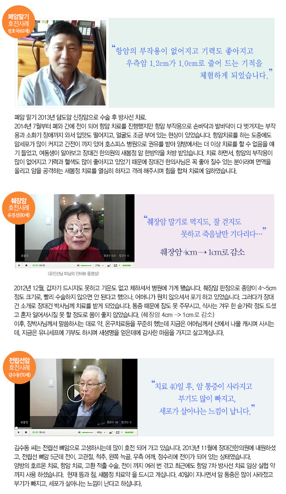
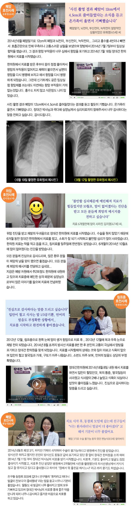

|
|
췌장암을 진단 받았던 유진선(80) 할머니는 "췌장암 말기로 먹지도, 걷지도 잘 못하고 죽을날만 기다리다.." 장대건 박사님의 치료를 통해 3개월뒤 4cm 이상 이던 췌장의 암이 1cm로 줄어 들어 암이 낫는 기적을 체험, 지금도 나물을 뜯고, 가사일을 하는 등 일상생활이 가능할정도로 건강한 삶을 살고 있다.
유진선 할머니의 모든 치료 과정과 따님의 인터뷰 영상은 장대건 한의원 홈페이지에서 모두 확인 할 수 있는데, 장대건 한의원 에서는 독특하게 모든 환자들의 치료 과정을 일기 형식으로 공개한다. |
|
|  |
|  |
 |
| 장개건한의원의 장대건한의학 박사는 면역침과 쑥뜸, 그리고 몸을 새롭게 봄으로 만들겠다는 의지를 담은 뜻으로 '새봄정'이라는 암약을 통해 많은 환우분들에게 희망을 주고 있습니다. |
| |
장대건 한의학박사는 세계 정통 선도가 수련의 정통파인 금선학회 정회원으로 네팔, 히말라야, 라닥, 중국의 종남산 자오곡 금선관등을 순회하며 10년간 수련을 하였으며, 전 세계를 돌며 암치료의 비전을 터득하고 고승들에게 암치료 비전을 직접 전수받았다. 이를 암치료 뜸법과 동양적 심리치료법에 접목, 완성하여 굉장히 높은 치료효율의 암치료를 하고있다.
의 치료약인 '새봄정'은 실로 놀라운 효과를 보여준다. 실제로 말기암을 치료하거나, 전이속도를 늦추는 것으로 학계뿐만 아니라 암환우들에게도 유명세를 타고 있고 암환자 생존율은 점차적으로 더 증가 하고 있다. |
|
|
| 장대건 박사의 암치료는 '재현성있는 암치료'를 추구한다. 재현성있는 암치료란 치료를 하면 그 방법이 그대로 재현이 되어서 A, B, C 대부분이 치료되는것이 재현성이 있는 치료다. 원래 치료라 함은 재현성이 있어야 하는것이 바로 치료라고 할 수 있다. 하지만 암은 어떤 암치료로 간혹 암이 치료되는 경우도 있지만, 그치료가 재현성이 있는 암치료가 아니고 어쩌다가 하늘의 별따기 처럼 낫는 치료는 재현성 있는 치료법이 아니다. 장대건 한의원에서는 재현성있는 암치료를 목표로 한발짝씩 나아가고 있다. |
- 자료제공 장대건한의원
- 홈페이지 바로가기 (http://www.cancerzero.co.kr/)
- 상담전화번호 02-3445-3316 / 곽다해 실장 010-3000-1393 |
[속보] ‘암’ 독소 이겨내는 신개념 치료물질 “발견”... 암 극복율 대폭증가
[속보] ‘산삼’의 효능으로 약침개발 성공? “장대건 한의원” 암 투병 생존율 극대화 |
| |
|
|